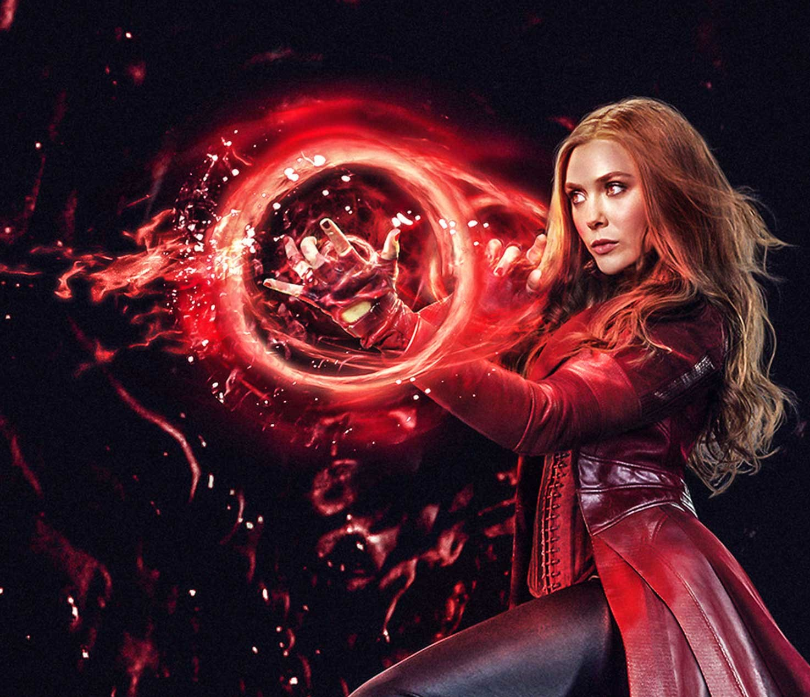

After finding intelligence in Loki's scepter, Tony Stark and Bruce Banner use it to start Ultron, a peacemaker, who soon uncovers the world's wrongs, and plans to rid human error. With help from experimented human beings turned allies, the Avengers search to hunt for Ultron, who is trying to make a synthetic human body to upload his mind into.Aside from this, the Avengers also must take on the powerful twins Quicksilver and Scarlet Witch as well as the new entity called Vision. Also, the Avengers find that things may never be the same again after discovering a power beyond their comprehension.
We start off with a bang—actually a lot of bangs. The Avengers are attacking the heavily-defended research lab of one Baron von Strucker, a Hydra baddie. The Avengers make mincemeat out of his soldiers, but they have a tougher time with "the twins"—Pietro and Wanda Maximoff. Pietro makes life tough for them with his blazing super-speed, but eventually all the Hydra butt is suitably kicked.
Inside Strucker's lab, Tony Stark discovers Loki's scepter. He goes to grab it, but Wanda Maximoff jumps out from behind him and hits him with spell that causes Tony to hallucinate. He sees all of his Avenger buddies lying dead around him, while the Chitauri aliens from the first Avengers invade a defenseless Earth.
This bums Tony out (natch'), but he shakes it off and the Avengers, having captured Strucker and the scepter, regroup at headquarters. Tony's computerized helper J.A.R.V.I.S. detects a kind of super-intelligence lurking in the gem in the scepter, so Tony works with Bruce Banner to transfer that into "Ultron."

What's an Ultron? Good question. It's Tony's vision for an Earth defense force, powered by artificial intelligence. One, small problem: this intelligence is so, er, intelligent that it shuts J.A.R.V.I.S. down and begins to think for itself. It decides that the best way to protect Earth is to wipe out humanity (an extreme view, but we'll just teach the controversy). To that, he needs to wipe out the Avengers first.After uploading himself into a robot fashioned from spare parts, Ultron crashes the Avengers' victory party (rude), with some of Tony Stark's re-programmed Iron Legion bots in tow. They're destroyed, but not before one of them takes off with the scepter. Ultron downloads himself on the internet (shouldn't have given him the WiFi password) and makes his getaway.
After uploading himself into a robot fashioned from spare parts, Ultron crashes the Avengers' victory party (rude), with some of Tony Stark's re-programmed Iron Legion bots in tow. They're destroyed, but not before one of them takes off with the scepter. Ultron downloads himself on the internet (shouldn't have given him the WiFi password) and makes his getaway.For his next trick, Ultron hooks up with the twins from earlier. He grabs some rare, vibranium metal to build his next body. When the Avengers try to stop him, Wanda Maximoff zaps a bunch of them and puts each of them on a bad trip.
The Avengers take a quick va-cay at Hawkeye's family house in the country in order to get their minds right. In the meantime, Ultron uses Loki's scepter to hypnotize the brilliant Dr. Helen Cho. Under his spell, she starts to build him a new body out of the vibranium. The Avengers track him down again and, with the help of the Maximoff twins (who have finally realized what a jerk Ultron is), they have a bit more success. They steal back Ultron's new android body, but not before he can take Black Widow prisoner. We'll call this one a tie.The Avengers go back to base and argue about whether to activate this new android, but Thor ends all nonsense that by zapping it with lightning and bringing the cyberdude to life. With this new Avenger's help, the team goes to the fictional country of Sokovia, where Ultron is waiting for them.
After a long fight—and the senseless death of thousands of Iron Legion robots—the Avengers put Ultron down, but not before he launches a good chunk of Sokovia into the air. His plan is to turn it into a meteor that will crash back to Earth and wipe out humanity (hey, it worked on the dinosaurs). Not so fast, Ultron. Nick Fury shows up in a Helicarrier to evacuate the civilians, then Iron Man and Thor destroy the would-be meteor so that it lands harmlessly in the sea.

Final score: Avengers 1, Ultron 0.